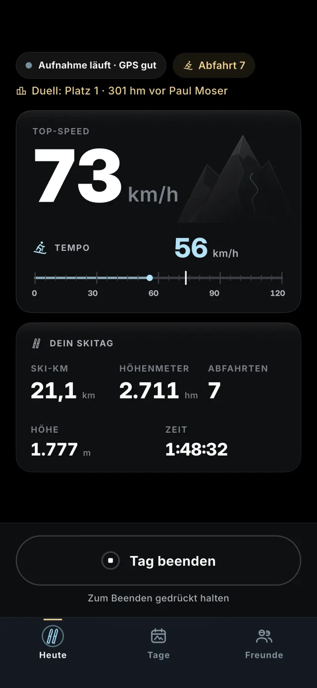
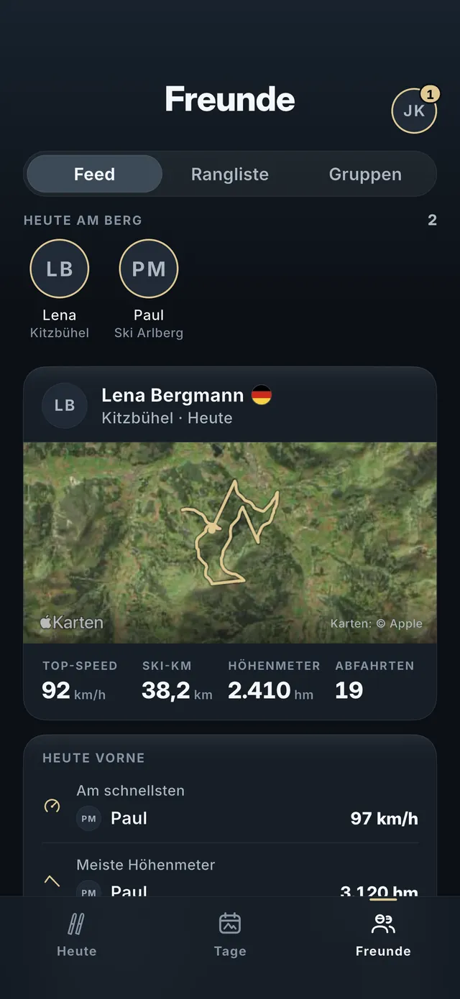
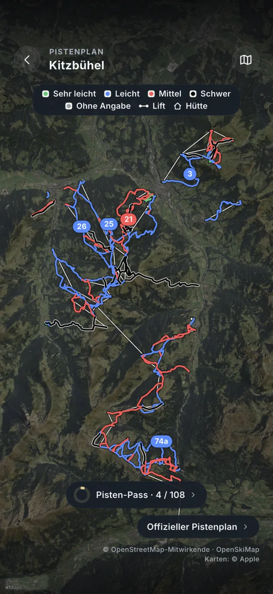
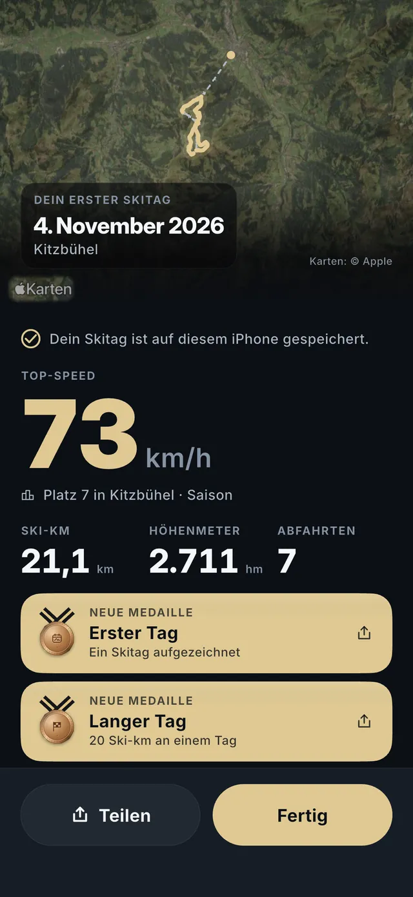
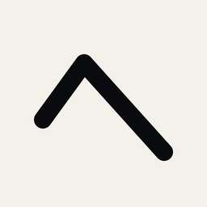

Ski-Tracker für iPhone und Apple Watch
Tracke jede
Abfahrt.
Top-Speed, Höhenmeter und Abfahrten – automatisch aufgezeichnet.

Mit dem iPhone scannenund SlopeTrack direkt laden
startet den Skitag
Skigebiete mit Pistenplan
Sprachen
Live
Wie schnell bist du wirklich?
Ein Klick startet den Skitag. iPhone in die Jacke – SlopeTrack erkennt Lift, Pause und Abfahrt von selbst.
Mit Freunden
Wer war heute der Schnellste?
Du und bis zu zwei Freunde: ein Code, ein Tag, live gegeneinander. Dazu Ranglisten pro Skigebiet, Land und weltweit.
Pistenplan
Finde deine nächste Abfahrt.
Über 4.000 Skigebiete weltweit – mit Liften und Hütten, auch offline.
Tagesbilanz
Das hast du geschafft.
Deine Route, jede Abfahrt mit Namen und Farbe, neue Rekorde. Und alles bereit für deine Instagram-Story.




Für genau
solche Tage.
Alles in einer App
Gemacht für deinen
Tag am Berg.
Apple Watch
Start am Handgelenk, Live-Werte und Herzfrequenz – gespeichert in Apple Health.
Medaillen & Level
Punkte für Höhenmeter, Kilometer und Abfahrten, Serien für Skitage am Stück.
Länderwertung
Tritt in der Saisonwertung für dein Land an.
Deine Daten
Deine Skitage werden in der EU gesichert. In öffentlichen Ranglisten erscheinst du nur, wenn du es selbst einschaltest.

Bereit für die
erste Abfahrt?
Gratis testen – mit allen Funktionen.
3 Tage gratis, danach kostenpflichtiges Jahresabo, wenn du nicht kündigst. Für Apple-Accounts, die den Test noch nicht genutzt haben.
Mit dem iPhone scannenund SlopeTrack direkt laden